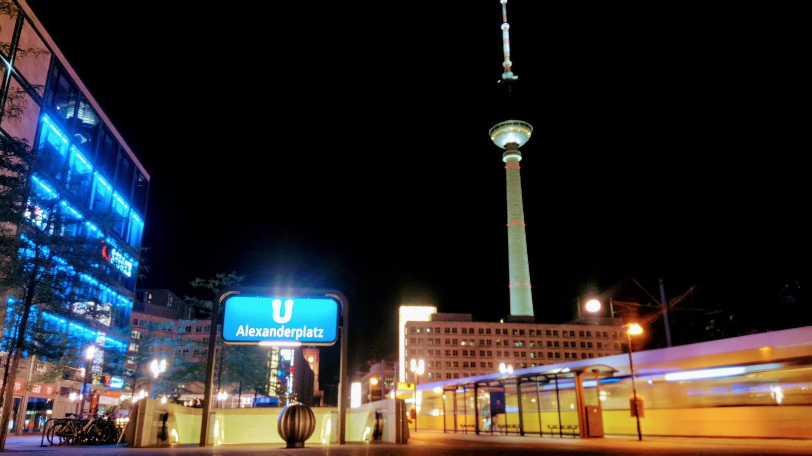

Berlin Solo Day Path
Choose one part of Berlin, then stay long enough to enjoy it.
Start in the historic centre, beside Tiergarten or in Kreuzberg. Add one proper stop and finish nearby instead of chasing another list of pins.
Build the day one place at a time
This is a planning aid, not turn-by-turn navigation. Every result names a real Berlin place so you know where to start, where to stay and where to finish before checking the live connection.
- 3 Berlin areas
- 1 flexible finish
1
Areawhere to start2
Stopwhere to stay3
Finishhow to endWhere should the day begin?
Pick one part of Berlin. The rest of the plan stays close to it.
Your solo Berlin day shape
Keep the promise small. Opening hours, transport disruptions, tickets and the right finish can change. Check the live source shortly before you move, and stay with a good place when the day is already working.
Header photo: Alexanderplatz at night with blurred moving tram by domdomegg via Wikimedia Commons, CC BY 4.0.